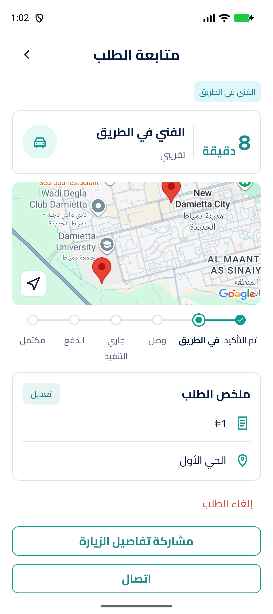
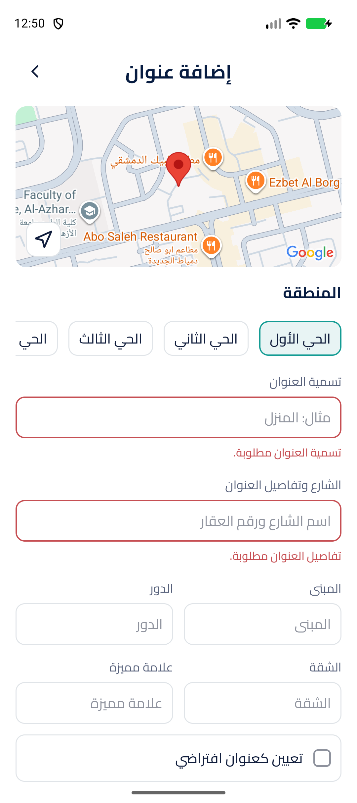
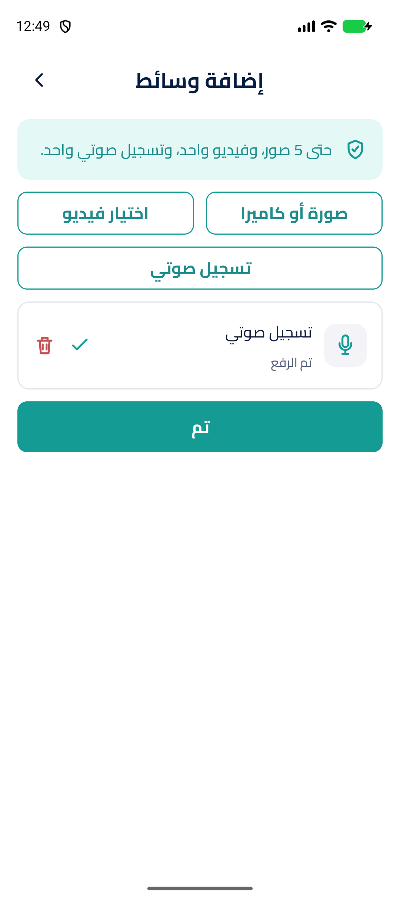
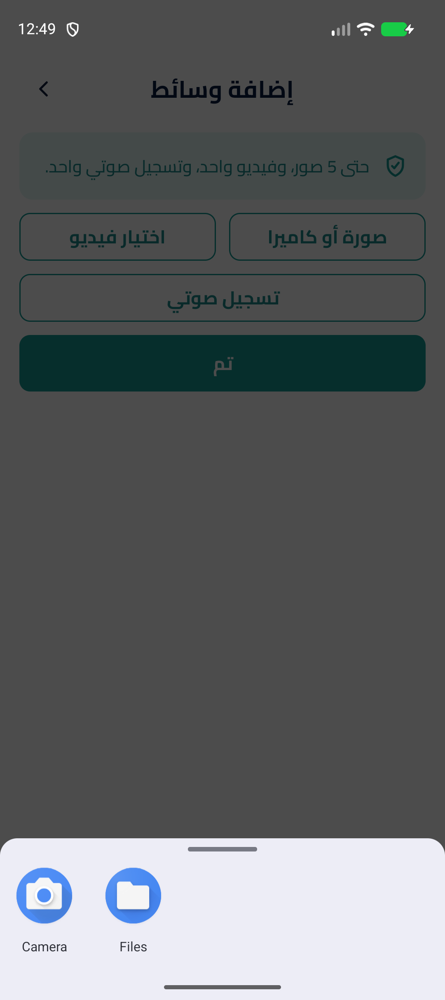

C09 — التتبع

المصدر: Google MapView + API تتبع كل 30 ثانية أثناء ON_THE_WAY.
ظهر دبوسا الفني والطلب، وETA تقريبي، والحالة المترجمة، ورقم الطلب والمنطقة الفعليان من API. توقف التتبع خارج ON_THE_WAY مغطى بالحالات المشتركة.
الحالة: مغلقة. حُقن مفتاح development محليًا من إعداد البناء، وشُغّلت الأدلة التالية على محاكي Pixel_9a من دون وضع المفتاح في git أو تعديل .env.

المصدر: Google MapView + API تتبع كل 30 ثانية أثناء ON_THE_WAY.
ظهر دبوسا الفني والطلب، وETA تقريبي، والحالة المترجمة، ورقم الطلب والمنطقة الفعليان من API. توقف التتبع خارج ON_THE_WAY مغطى بالحالات المشتركة.

المصدر: Google MapView، دبوس محفوظ، نقر للاختيار، وزر موقعي.
حُمّلت البلاطات الفعلية واختير موضع جديد بالنقر. مسارا الإذن والعنوان المحفوظ مغطّيان آليًا.


المصدر: منتقيات النظام، الكاميرا، AAC/m4a، رفع وحذف وإعادة محاولة.
ظهر اختيار الكاميرا/الملفات والفيديو، وسُجل AAC/m4a ثم اكتمل رفعه. الرفض وإعادة المحاولة مغطّيان بالاختبارات.
MAPS_ANDROID_API_KEY، والحزمة الفعلية com.bremo.app بلا لاحقة debug.